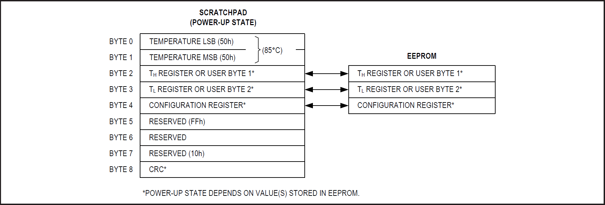

| Typ práce: | Bakalárska práca |
| Názov témy: | Raspberry Pi ako dátový prezentačný systém |
| Vedúci práce: | prof. Ing. René Harťanský, PhD. |
| Fakulta: | Fakulta elektrotechniky a informatiky |
| Garantujúce pracovisko: | Ústav elektrotechniky - FEI |
| Akademický rok: | 2018/2019 |
| Navrhol: | prof. Ing. René Harťanský, PhD. |
on Debian systems located at /var/www/html/index.html
Teplomer DS18B20 komunikuje prostredníctvom “One-Wire” komunikačného protokolu, a proprietary serial communication protocol that uses only one wire to transmit the temperature readings to the microcontroller.
Teplomer DS18B20 môžeme používať aj v tzv. parazitnom móde. DS18B20 potrebuje tri káble pre správnu prevádzku: Napájanie (Vcc), Uzemnenie (ground), a data kábel. V parazitnom móde sa využíva iba uzemnenie a data káble, pričom teplomer napájame pomocou data kábla.
Teplomer DS18B20 taktiež disponuje funkciou, ktorá upozorní užívateľa, keď sa prekročí spodná alebo aj horná hraničná teplota nastavená užívateľom.
64 bitová ROM slúži na uloženie unikátneho serioveho kódu zariadenia. Táto 64 bitová adresa umožnuje mikrokontroléru príjmať namerané dáta z virtuálne nekonečného počtu senzorov na tom istom pine. Adresa hovorí mikrokontroléru z ktorého senzoru pochádza nameraná hodnota teploty.
- napájacie napätie je v rozsahu 3,0V až 5,5V
- počas merania a počas zápisu do EEPROM senzor potrebuje prúd 1,5 mA
- rozsah meranej teploty je od –55°C do +125°C (-67°F do +257°F)
- 0,5°C (9 bit); 0,25°C (10 bit); 0,125°C (11 bit); 0,0625°C (12 bit) rozlíšenie v rozsahu –10°C do +85°C
- meranie teploty s rozlíšením 12-bit trvá 750ms
- obojsmerná poloduplexná prevádzka
- 64 bitov unikátnych adries
- One-Wire komunikačný protokol
V prípade nejasností ohľadom časovania, nastavenia parazistného napájania, a nastavenia alarmu, pozri datasheet:
Obsahuje 8 bytov

Byte 0 a 1
| BIT 7 | BIT 6 | BIT 5 | BIT 4 | BIT 3 | BIT 2 | BIT 1 | BIT 0 | |
| LS BYTE | 23 | 22 | 21 | 20 | 2-1 | 2-2 | 2-3 | 2-4 |
| BIT 15 | BIT 14 | BIT 13 | BIT 12 | BIT 11 | BIT 10 | BIT 9 | BIT 8 | |
| MS BYTE | S | S | S | S | S | 26 | 25 | 24 |
| S = SIGN |
pre 12-bitové rozlíšenie – všetky bity v teplotnom registri budú obsahovať platné údaje.
pre 11-bitové rozlíšenie – bit 0 nieje definovaný
pre 10-bitové rozlíšenie – bity 1 a 0 sú nedefinované
pre 9-bitové rozlíšenie – bity 2, 1 a 0 nie sú definované
| TEMPERATURE (°C) | DIGITAL OUTPUT (BINARY) | DIGITAL OUTPUT (HEX) |
| +125 | 0000 0111 1101 0000 | 07D0h |
| +85* | 0000 0101 0101 0000 | 0550h |
| +25.0625 | 0000 0001 1001 0001 | 0191h |
| +10.125 | 0000 0000 1010 0010 | 00A2h |
| +0.5 | 0000 0000 0000 1000 | 0008h |
| 0 | 0000 0000 0000 0000 | 0000h |
| -0.5 | 1111 1111 1111 1000 | FFF8h |
| -10.125 | 1111 1111 0101 1110 | FF5Eh |
| -25.0625 | 1111 1110 0110 1111 | FE6Fh |
| -55 | 1111 1100 1001 0000 | FC90h |
*The power-on reset value of the temperature register is +85°C.
Byte 2 a 3
sú TH a TL bajty a vyžívajú sa na signalizáciu alarmu. Nastavujú sa užívateľom a ich hodnota je porovnávaná s nameranou hodnotou a podľa toho sa nastavuje S bit. Viac v datasheete.
Byte 4
je konfiguračný register. Nastavíme ním rozlíšenie 9 až 12 bitov:
Byte 5, 6, 7
sú rezervované pre interné použitie a nieje možné ich prepísať
Byte 8
je iba na čítanie a obsahuje kód CRC pre bajty 0 až 7 scratchpadu
R1: 4,7K Ohm
-
V príkazovom riadku zadáme:
sudo nano /boot/config.txt -
Následne zadáme na úplny spodok súboru:
dtoverlay=w1–gpio -
Opustíme editor nano a reštartujeme naše Pi príkazom:
sudo reboot -
Znovu sa prihlásime do Pi a do príkazového riadku zadáme:
sudo modprobe w1–gpio -
Následne zadáme:
sudo modprobe w1-therm -
Vstúpime do priečinku /sys/bus/w1/devices tak, že zadáme:
cd /sys/bus/w1/devices -
Pre zobrazenie všetkých súborov nachádzajúcich sa v danom priečinku zadáme:
ls - V mojom prípade sa zobrazilo:
28-000006637696 w1_bus_master1 - Náš teplotný senzor je ten so samými číslami. Takže zadáme:
cd 28-XXXXXXXXXXXX(Nahradte X za svoje čísla). Takže v mojom prípade zadám:cd 28-000006637696 - Ďalej zadáme:
cat w1_slave, čo zapríčiní, že sa nám zobrazí neupravená hodnota teploty. Skutočnú teplotu v °C dostaneme tak, že zobrazené čislo vynásobíme čislom 1000. - Príkazom
cdsa vrátime do root priečinku.
Aby sme mohli pracovať so SQL serverom potrebujeme nainštalovať balíček, ktorý umožnuje komunikáciu medzi python kódom a SQL serverom. Nasledovným príkazom naištalujeme potrebný balíček:
sudo apt-get install python-mysqldb
Tento tutorial je určený pre operačný systém Raspbian.
-
Predtým než naištalujeme MySQL na naše Raspberry Pi, musíme aktualizovať náš package list a všetky naištalované balíčky. Pre vykonanie aktualizácie systému zadáme:
sudo apt updatesudo apt upgrade -
MySQL naištalujeme jednoduchým príkazom:
sudo apt install mariadb-server - Ďalším krokom je zabezpečiť databázy heslom pre užívateľa root. Tento krok nie je potrebný pre správne fungovanie MySQL. Štandardne je MySQL pri inštalácii nastavené bez hesla, čo znamená, že sa môžeme dostať do MySQL bez akejkoľvek autorizácie.
-
Pre nastavenie zabezpečenia MySQL zadáme nasledovný príkaz:
sudo mysql_secure_installation -
Počas inštalácie sa nás bude program pýtať, či chceme ďalšie zabezpečenia. Pre lepšie zabezpečenie nášho servera by sme mali odpovedať na každú výzvu 'Y'. To zapríčiní, že sa odstránia určité vlastnosti, ktoré umožnujú jednoduchý prístup do serveru.
Nezabudnite si poznačiť vaše heslo, aby ste si ho mohli pripomenúť ak ho zabudnete.
-
Teraz môžeme vstúpiť do nášho MySQL servera zadaním nasledovného príkazu:
sudo mysql -u root -pProgram nás vyzve, aby sme zadali heslo (heslo, ktoré sme práve vytvorili).
Poznámka: Väčšina Linux systémov nevypisuje heslo do konzoly.
- V prípade, že sme zadali heslo správne, môžeme odteraz spravovať databázy. Taktiež môžeme vytvoriť alebo zmazať užívateľov a priradiť im práva pre spravovanie databáz. Existujú dva spôsoby ako opustiť príkazový riadok MySQL. Prvý je, že zadáme
quitdo konzoly. Druhý spôsob je, že použijeme klávesovu kombináciu CTRL + D.
-
Before we proceed to create a MySQL user and database on our Raspberry Pi, we must first log back into the MySQL command-line tool.
Run the following command to log in to the MySQL command line. You will be prompted to enter the password for the “root” account that you set up earlier.
sudo mysql -u root -p -
Let’s start by creating a MySQL database using the following command. This command is super simple and is just “CREATE DATABASE” followed by the name that you want to give the database.
In our example, we will be calling this database “exampledb“.
CREATE DATABASE exampledb; -
Next, we will create a MySQL user that we will assign to our new database. We can create this user by running the following command.
For this example, we will be calling the user “exampleuser” and giving it the password “pimylifeup“. When creating your own, make sure you replace both of these.
CREATE USER 'exampleuser'@'localhost' IDENTIFIED BY 'pimylifeup'; -
With the user created, we can now go ahead and grant all privileges to the user so that it can interact with the database.
This command will grant all permissions to our “exampleuser” for all tables within our “exampledb” database.
GRANT ALL PRIVILEGES ON exampledb.* TO 'exampleuser'@'localhost'; -
The final thing we need to do for both our MySQL database and user to be finalized is to flush the privilege table. Without flushing the privilege table, the new user won’t be able to access the database.
We can do this by running the following command.
FLUSH PRIVILEGES;
If you intend on using a MySQL database from PHP, you will need to make sure that you have the module installed.
You can install the MySQL connector for PHP to your Raspberry Pi by running the following command.
sudo apt install php-mysql
As I mentioned earlier, there are many projects where a database will come in handy. Most modern websites will require a database to be able to function correctly. At this point of the tutorial you should now have a MySQL server up and running on your Raspberry Pi.
Do databázy vstúpime pomocou príkazu:
sudo mysql
show databases;
CREATE database bakalarka;
show tables in bakalarka;
use bakalarka;
show tables;
Príklad na CREATE:
CREATE table temperature
(
id int not null auto_increment primary key,
temp float,
datetime timestamp default current_timestamp
);
Príklad na INSERT:
INSERT INTO temperature (temp) VALUES (30.0);
Príklad na UPDATE:
UPDATE temperature SET temp=15.0, datetime=NOW() WHERE id=1;
Príklady na DELETE:
DELETE FROM users WHERE title='Mrs'; //this will delete all Mrs
DELETE FROM MARKS WHERE ID=(SELECT MAX(id) FROM MARKS); //this deletes last record(row)
drop table temperature; //this will delete that table completely
drop database bakalarka; //this will delete that database completely
Príklad na TRUNCATE:
TRUNCATE TABLE temperature;
//deletes the data inside a table, but not the table itself
Príklady na SELECT:
SELECT * FROM temperature;
SELECT id, temp, TIME(datetime) FROM temperature;
show fields FROM bakalarka;
SELECT * FROM bakalarka ORDER BY datetime desc;
//zoradi od najväčšieho po najmenšie (zostupne)
SELECT * FROM bakalarka WHERE (temp>30.0);
SELECT * FROM bakalarka WHERE (first_name like "%ard");
//vsetky mena konciace na ard
SELECT * FROM (
SELECT *
FROM temperature
WHERE datetime > timestamp(DATE_SUB(NOW(), INTERVAL 30 MINUTE))
ORDER BY datetime desc
LIMIT 10
) t
ORDER BY datetime asc;
SNMP - Simple Network Management Protocol
Architektúra SNMP rozoznáva prinajmenšom 2 komponenty:
- Spravovaný objekt (SNMP agent, napr. na prepínači)
- Spravovacia stanica (napr. SNMP platforma)
Môže obsahovať subagentov (slave).
SNMP protokol definuje operácie nad MIB bázou (Management Information Base). MIB de facto popisuje možné OID (Object identifier) - objekty s ktorými je možné pracovať, ich typ (Integer, Octet String, atď) a možný prístup k nim (read-only, read-write, write-only). Štandardná MIB báza už definuje mnoho premenných (OID, napr. informáciu o agentovi, správu/monitorovanie sieťových rozhraní, smerovacie tabuľky a i.). Výrobcovia zariadení pokrývajú spravidla len časť štandardnej MIB (slušný SNMP agent podporuje aspoň oblasť System Information). MIB je však navrhnutá tak, aby sa dala rozširovať vo vymedzenej privátnej oblasti vlastnou MIB výrobcu.
SNMP agent spravidla používa UDP port 161 (a posiela SNMP trapy na UDP port 162). SNMP protokol používa ako prezentačnú vrstvu ASN.1.
Do konzoly zadáme príkaz:
sudo apt-get update
sudo apt-get install snmpd
sudo apt-get install snmp
1-Wire je spôsob komunikácie založený na princípe bus system, ktorý bol vyvinutý spoločnosťou Dallas Semiconductor Corp.
1-Wire je podobný ako I²C, ale rozdiel je ten, že 1-Wire má menšiu rýchlosť prenosu informácii a dokáže komunikovať na väčšie vzdialenosti. One-Wire zvyčajne používame na komunikáciu s menšími, jednoduchšími zariadeniami ako napríklad digitálny teplomer a ďalšie senzory na meranie a predpoveď počasia. Sieť zariadení využívajúcich 1-Wire protokol s priradeným master zariadením nazývame MicroLAN.
Jedna zo zaujímavých vlastností zbernice je, že nám stačí použiť iba dva káble, tento mód nazývame parazitný mód. Umožňuje nám to zabudovaný 800 pF kondenzátor, ktorý uchováva náboj a napája zariadenie počas doby, keď je dátova zbernica aktívna.
V MicroLAN sieti, máme vždy jedného master, zvyčajne stolný počítač alebo mikrokontróler. Master iniciuje aktivitu na zbernici, čo zjednodušuje predchádzanie kolíziám na zbernici. Komukačné protokoly na zistenie kolízie sú zabudované v masterovom softvéry. Ak zistí, že zbernica je obsadená, pokúsi sa zopakovať vyžiadanú komunikáciu.
1-Wire sieť je tvorená jedným otvoreným drôtom s jedným pull-up rezistorom. Tento pull-up rezistor stiahne potenciál drôtu na 3 alebo 5 voltov. Napriek názovu 1-Wire, musia mať všetky zariadenia v sieti aj druhý, ground, kábel umožňujúci prietok elektrického prúdu cez data kábel. Komunikácia začína v momente, keď master alebo slave na chvíľu stiahne potenciál zbernice na logickú nulu, tj. pripojí prostredníctvom pull-up rezistora zbernicu na kábel uzemnenia cez jeho MOSFET výstup. Keď neprebieha komunikácia, dáta kábel má logickú jednotku, čo umožnuje napájanie konečný počet ďalších slave zariadení v sieti. Rýchlosť prenosu dát je 16.3 kbit/s. K dispozícii máme aj overdrive mode, ktorý zvyšuje rýchlosť prenosu dát desaťnásobne.
Master začína prenos tak, že vyšle resetujúci pulz, čo znamená, že stiahne potenciál dátovej zbernice na 0 voltov po dobu 480 µs. Tento pulz zresetuje každé slave zariadenie v sieti. Následne, nejaké slave zariadenie, ak je prítomné, sa ohlási, že je pripojené krátkym "presence" pulzom tak, že podrží zbernicu na logickej nule ďalších 60 µs po tom, čo master uvoľnil zbernicu naspäť na logickú jednotku.
Aby sme poslali logickú jednotku, master vyšle veľmi krátky (1-15 µs) pulz s logickou hodnotou nula. Aby sme poslali logickú nulu, master vyšle dlhší (60 µs) pulz s logickou hodnotou nula. Dobežná hrana signálu spúšťa monostabilný multivibrátor slave zariadenia. Multivibrátor prečíta dáta približne 30 µs po tom, čo dobežná hrana skončí. Vnútorne hodiny slave zariadenia sú jednoduché analógove hodiny. Tie majú určitú analógovu toleranciu, čo ovplyvňuje jeho presnosť. Z toho dôvodu sa pulzy počítajú v rozmedzí určitých hraníc a z toho istého dôvodu musia byť pulzy logickej nuly dlhé 60 µs, a súčasne pulzy logickej jednotky nesmú byť dlhšie ako 15 µs.
Keď príjmame dáta, master vyšle 1-15µs dlhý pulz logickej nuly pre každý bit. Ak chce slave poslať logickú jednotku, nerobí nič, čo znamená, že sa zbernica znovu zdvihne na logickú jednotku. Ak chce slave poslať logickú nulu, musí podržať zbernicu na nulovom potenciáli po dobu 60 µs.
Obviklá postupnosť je, že sa vyšle reset pulz, následne 8-bitov dlhý príkaz, a potom sú dáta príjmane alebo odosielané po skupinkách 8 bitov.